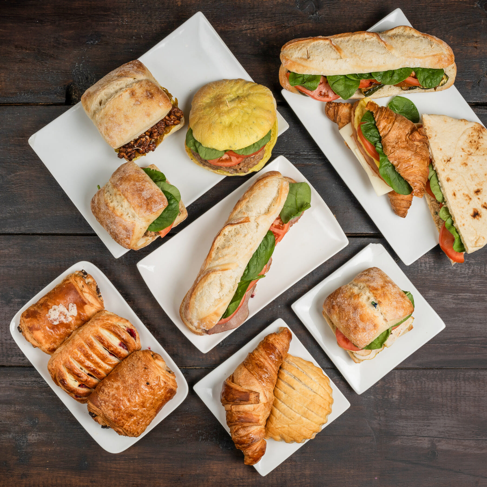

Nous sommes ravis de vous présenter les dernières nouvelles et offres spéciales du Café Nigelle pour le mois de Mai 2024 !
Offre Spéciale du mois : Sandwichs, Burgers et Croissants
Profitez de nos offres spéciales exclusives pour rendre votre visite au Café Nigelle encore plus mémorable. Dégustez nos créations uniques à prix réduit et découvrez de nouvelles saveurs qui éveilleront vos sens. Que vous soyez seul(e), en famille ou entre amis, nos offres spéciales sont conçues pour vous offrir une expérience gustative exceptionnelle à un prix avantageux.
A propos de Chef Moh, propriétaire du restaurant
Découvrez le parcours exceptionnel d'un chef cuisinier passionné et talentueux, dont le voyage culinaire débute en Tunisie, où il obtient brillamment son BTS en cuisine en 1998. Fort de son expertise acquise dans les prestigieux hôtels cinq étoiles de son pays natal, il décide de partir à l'aventure et s'envole pour Dublin. Là-bas, il prend les rênes de la cuisine dans des clubs de golf renommés tels que le Portmarnock Golf Club, où il sublime les saveurs pour une clientèle exigeante. En 2005, son parcours le conduit au Canada, où il contribue à l'ouverture de plusieurs établissements gastronomiques emblématiques, dont la célèbre Brioche Dorée au cœur de Montréal. Son ambition et son talent le propulsent ensuite à devenir propriétaire et chef de restaurants orientaux à Montréal, où il crée des expériences culinaires inoubliables pour ses clients. Parmi ses réalisations marquantes figure le Café Nigelle, véritable oasis de saveurs où l'authenticité et la passion se mêlent pour offrir une cuisine raffinée et inspirante. Avec un parcours aussi riche et diversifié, ce chef émérite est une véritable référence dans le monde de la gastronomie, prêt à vous faire voyager à travers les délices de ses créations.
Nous vous invitons à nous rendre visite dès que possible pour découvrir par vous-même tout ce que le Café Nigelle a à offrir. N'oubliez pas de suivre notre page Facebook et de vous abonner à notre newsletter pour ne manquer aucune de nos actualités et promotions.
Merci de faire partie de notre communauté de passionnés de gourmandises !
Bien cordialement,
L'équipe du Café Nigelle